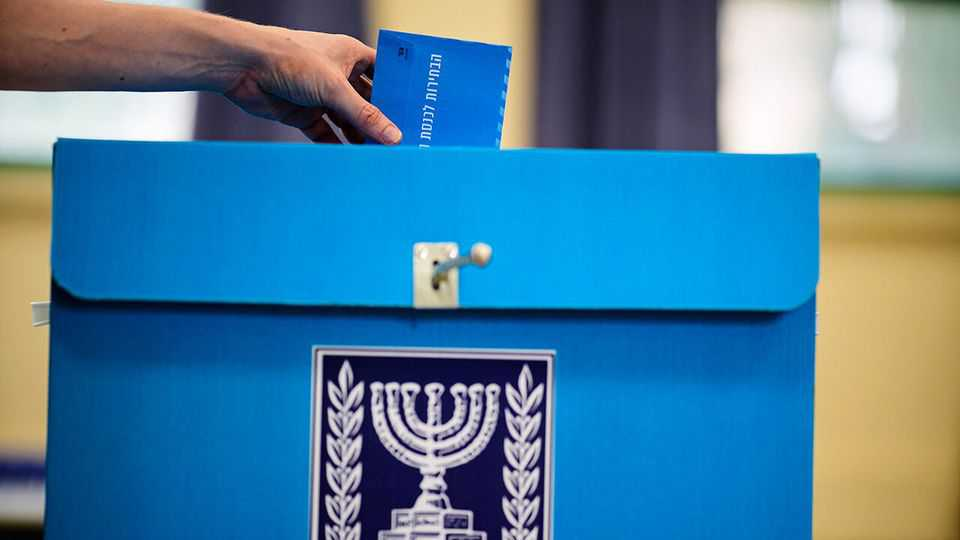

Politics

Oct 29th 2026
No clear winner emerged from Israel’s election. With more than 90% of the vote counted, Binyamin Netanyahu’s bloc won 53 of the 120 seats in the Knesset. The opposition parties took 67 seats, enough to command a majority. But 19 of those seats went to Arab parties, a historic high, and most of the Jewish opposition parties have refused to include them in a coalition. Once the results are finalised, coalition talks will begin. Before the election Mr Netanyahu ordered Israeli troops into Hebron, a city in the occupied West Bank, after Palestinian gunmen attacked a military checkpoint, killing two soldiers. Thousands of Palestinians were forced to leave their homes or had their homes demolished.
Officials from Pakistan, Saudi Arabia and Turkey, the three signatories to the new Mecca pact, travelled to Tehran to meet Iran’s security chief and president. The meeting took place amid more attacks by the Houthis, Iranian-backed rebels in Yemen, on Saudi infrastructure and the growing threat of further American and Israeli strikes on Iran. No breakthroughs were announced.
Nine people were shot dead at a Christian funeral in Jordan. The country’s air force struck back at “terrorist organisations” in Syria.
At least 100 people were killed and dozens more injured in an army drone strike on a market in Nyala, in Sudan’s Darfur region, which is controlled by the rebel Rapid Support Forces. According to the UN drone strikes killed over 300 people and injured hundreds more in the first three weeks of October. Separately, drone strikes by the RSF knocked out several power plants in army-controlled areas, causing widespread power cuts.
Dozens of African delegations travelled to Moscow for a summit with Vladimir Putin. Mr Putin is trying to pitch Russia as a more reliable partner for African countries than the “colonial” West.
A Tanzanian opposition activist was abducted near Nairobi, the latest sign that the Kenyan capital is no longer a sanctuary for regional dissidents. Twaha Mwaipaya is the third prominent Tanzanian dissident to have been abducted in Kenya, in what appears to be a troubling trend of governments in East Africa colluding to crush dissent.
Kim Jong Un, North Korea’s dictator, made a surprise visit to Dandong in China. Mr Kim was driven over a bridge crossing the Yalu river to the border city. The official reason for his trip was to commemorate China’s support for North Korea during the Korean war. Speculation swirled that he was also consulting with the Chinese ahead of a possible meeting with Donald Trump.
South Korea proposed talks with North Korea on the demarcation of their border following several recent incidents in the demilitarised zone, including a landmine explosion that injured three South Korean soldiers. It is unclear whether North Korea will accept the offer. After the explosion, the North resumed its broadcasts along the border, blaring propaganda from loudspeakers into the South.
At least 68 people were killed when two high-speed trains collided on the line between Madrid and Seville in Spain. One train was stationary, reportedly because of a computer-system failure. The crash has raised more concerns about maintenance of the country’s railways. In January 46 people died when one train derailed and another smashed into its carriages in southern Spain.
More than 1,400 people were arrested across France in another day of protests that were accompanied by vandalism and looting, but less so than over the previous weekend. The day before the demonstrations a black man was shot dead near Paris and seven people injured, including a child, when a 39-year-old man opened fire from his car. Emmanuel Macron called it a “racist, terrorist attack”.
Marine Le Pen, the populist-right front-runner in next year’s presidential election, officially launched her campaign. She made her first campaign speech in Orléans, a city closely associated with Joan of Arc. At its party congress the same weekend, her National Rally re-elected Jordan Bardella as its president. Ms Le Pen confirmed that she will appoint him prime minister if the party takes power.
In Ukraine a six-day ceasefire came into force to allow humanitarian aid into the Russian-occupied city of Oleshky. The ceasefire was reportedly extended across the Kherson region. Meanwhile, Vladimir Putin spoke by phone to the leaders of Finland and Norway ahead of forthcoming trilateral talks between Russia, Ukraine and America that will take place in Abu Dhabi.
Aleksandar Vucic, who has served as either prime minister or president of Serbia since 2014, conceded defeat in a parliamentary election. Mr Vucic had called the snap poll after two years of student-led protests against corruption and abuses of government power. Tens of thousands of people took to the streets to celebrate the Student List’s stunning victory. The list was composed of candidates selected by student bodies; the students ruled themselves out from standing. Russia has now lost two key allies in Europe: Mr Vucic in Serbia and Viktor Orban in Hungary.
Two men, both British nationals, were charged in connection with an incident at RAF Fairford that is thought to have been directed by Iran. Details of the plot remain unclear, but intelligence warnings that Iran was planning to attack the air-force base prompted America to withdraw its fleet of bombers.
Luiz Inácio Lula da Silva was re-elected as Brazil’s president in a run-off election, winning 52% of the vote. It was the first time a candidate who had finished second in the first round went on to win the run-off. Flávio Bolsonaro, his conservative challenger and the first-round winner, described the outcome as “inexplicable” and suggested foul play, but his party accepted the result. After the election, Mr Bolsonaro left Brazil for Miami, defying a judge who ordered him to stay in the country while a pre-existing criminal investigation continues. In a social-media post he said the election had been stolen by “criminals” who have “established a tyranny”.
María Corina Machado returned to Venezuela. The opposition leader left the country ten months ago to collect a Nobel peace prize. She had tried to return several times since January, when American special forces arrested Nicolás Maduro. Ms Machado has called for fresh elections, though her party has been excluded from talks brokered by the Trump administration on a future electoral process. Marco Rubio, America’s secretary of state, says the talks are making progress and that no one should try to “derail that process”.
In Canada the opposition Conservative Party won its first election in British Columbia in nearly 100 years. The province had been governed by the left-wing New Democratic Party since 2017. The Conservatives have pledged to slash red tape and remove limits on greenhouse-gas emissions. They also promise to increase British Columbia’s output of liquefied natural gas and support a new oil pipeline from Alberta to the west coast. The party’s pro-energy agenda is bound to face legal challenges.
King Charles began a tour of the Caribbean amid calls from some countries in the region for Britain to pay reparations for slavery. Several governments want the issue placed high on the agenda at the summit of Commonwealth governments that the king will attend in Antigua and Barbuda.